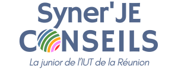

01↗
Étude de marché
Analyser un marché, les concurrents et les attentes des clients pour mieux éclairer une décision.
En parler →
LA JUNIOR DE L'IUT DE LA RÉUNION
Syner'JE Conseils met les compétences des étudiants de l'IUT de La Réunion au service des professionnels du territoire.
NOTRE POSITIONNEMENT
Une entreprise, une association ou une collectivité peut avoir besoin d'un regard extérieur, d'une analyse ou d'un appui ponctuel. Syner'JE Conseils propose une mission construite autour de ce besoin.
Découvrir Syner'JE Conseils →L'HUMAIN AU CENTRE
Les compétences acquises à l'IUT prennent une dimension concrète à travers les missions confiées par les professionnels.
01 — NOS SERVICES
Nos prestations sont définies selon la nature de votre projet et les compétences nécessaires pour y répondre.
Analyser un marché, les concurrents et les attentes des clients pour mieux éclairer une décision.
En parler →Clarifier vos objectifs et construire des pistes de communication cohérentes avec votre activité.
En parler →Organiser votre démarche commerciale et développer des outils utiles à vos équipes.
En parler →Votre problématique est spécifique ? Nous échangeons avec vous pour définir le besoin.
Décrire mon projet →02 — LA JUNIOR
Syner'JE Conseils est une structure portée par des étudiants de l'IUT de La Réunion. L'objectif est double : apporter aux professionnels des compétences mobilisables et permettre aux étudiants de développer une expérience concrète.
Les missions sont organisées et suivies dans le cadre de Syner'JE et de l'IUT.
03 — POURQUOI NOUS ?
Des perspectives différentes pour questionner votre activité et faire émerger de nouvelles idées.
Des profils de TC et GEA mobilisables selon la problématique rencontrée.
Une mission construite autour de vos objectifs, avec des tarifs adaptés à votre besoin.
Un échange de proximité pour comprendre votre demande et suivre l'avancement de la mission.
04 — NOTRE DÉMARCHE
Nous privilégions une démarche simple : comprendre avant de proposer.
Vous nous présentez votre activité, votre besoin et vos objectifs.
Nous précisons votre problématique et les compétences nécessaires.
Le contenu de la mission et ses modalités sont définis avec vous.
Les étudiants mobilisés travaillent dans le cadre défini avec Syner'JE.
05 — NOTRE TERRITOIRE
Entreprises, TPE, PME, collectivités et associations : Syner'JE souhaite créer un lien concret entre les compétences étudiantes et les besoins de La Réunion.
06 — CONTACT
Décrivez-nous votre projet. Un premier échange nous permettra de comprendre votre besoin et de voir comment Syner'JE peut vous accompagner.